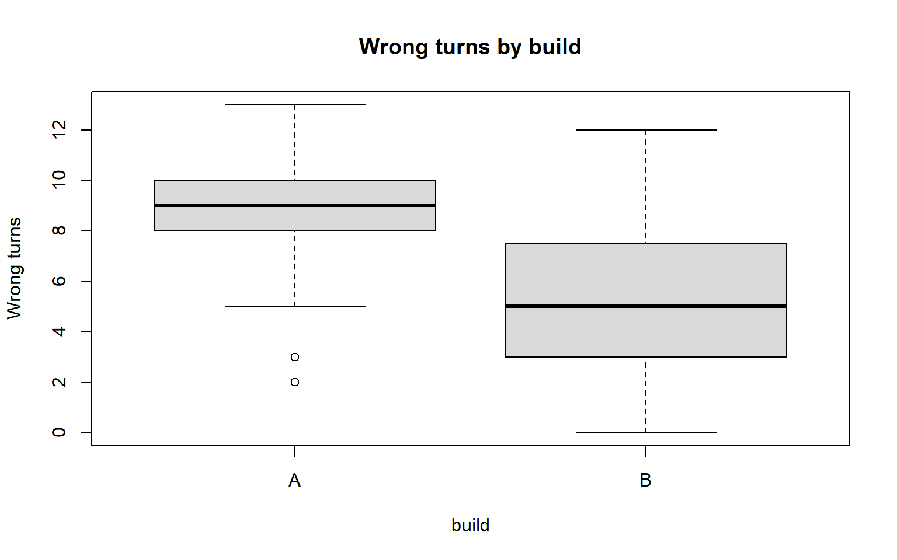

Cleaning, the six verbs and comparing builds, live
The lecturer’s script for the two 15-minute demo slots in Week 2. Every chunk runs and shows its output. Step through it top to bottom; the bold headings are the places to pause. Base R plotting only this week.
Demo 1 — Cleaning is analysis
Step 1. Read the export as delivered
library(readr)library(dplyr)# trim_ws = FALSE: see the stray spaces Excel would see. read_csv hides them.raw <-read_csv("data/tidebreak_sessions_raw.csv",trim_ws =FALSE, show_col_types =FALSE)nrow(raw) # 120 sessions were played
[1] 124
Step 2. Rows exported twice
sum(duplicated(raw)) # rows repeating every column
[1] 4
sum(duplicated(raw$session_id)) # rows repeating the key: same count, so all exact
[1] 4
clean <- raw[!duplicated(raw), ] # keep the first copy of eachnrow(clean)
[1] 120
Step 3. Labels that should match
table(clean$cohort) # spaces and capitals make extra "cohorts"
# Split the gaps by something that might explain them.table(build = clean$build, quit = clean$quit_reason,missing =is.na(clean$session_minutes))["A", , ]
missing
quit FALSE TRUE
Completed test 31 0
Frustrated 12 8
Lost interest 7 0
Technical fault 2 0
Pause here. Ask: every blank session length is a Build A frustration quit. Noise, or a finding?
Step 5. The one-line fix that removes the finding
kept <- clean[complete.cases(clean), ] # "just drop the NAs"nrow(kept)
[1] 109
table(clean$build[clean$quit_reason =="Frustrated"]) # before
A B
20 5
table(kept$build[kept$quit_reason =="Frustrated"]) # after
A B
12 5
Pause here. Ask: nothing warned us. What goes in the cleaning log?
Step 6. The six verbs, read as a sentence
# The pipe passes the left-hand result in as the first argument on the right.clean |>filter(build =="A", quit_reason =="Frustrated") |>mutate(logged =!is.na(session_minutes)) |>select(session_id, cohort, session_minutes, logged) |>arrange(session_minutes) |>head(4)
# A tibble: 2 × 3
build n mean_wrong
<chr> <int> <dbl>
1 A 60 8.92
2 B 60 5.52
Finish here.tapply() does it in one call. group_by() + summarise() does the same thing in two named steps, and takes a second statistic for one more argument.
Demo 2 — Is the difference real, and does it matter?
Step 8. Look before you test
# The complete export: same sessions, logging fault fixed.sessions <-read_csv("data/tidebreak_sessions.csv", show_col_types =FALSE)boxplot(wrong_turns ~ build, data = sessions,main ="Wrong turns by build", ylab ="Wrong turns", col ="grey85")

Step 9. Another playtest, another answer
# Pretend we could only afford 15 sessions per build. Draw five such playtests.set.seed(8015)replicate(5, { a <-sample(sessions$wrong_turns[sessions$build =="A"], 15) b <-sample(sessions$wrong_turns[sessions$build =="B"], 15)mean(a) -mean(b) # the difference this playtest would have reported})
[1] 4.066667 3.733333 3.866667 3.466667 5.200000
Pause here. Ask: same builds, five answers. Which one is “the” difference?
Step 10. The t-test: size, interval, p-value
# Different players on each build, so the independent-samples test.result <-t.test(wrong_turns ~ build, data = sessions)result
Welch Two Sample t-test
data: wrong_turns by build
t = 7.3208, df = 116.07, p-value = 3.492e-11
alternative hypothesis: true difference in means between group A and group B is not equal to 0
95 percent confidence interval:
2.480141 4.319859
sample estimates:
mean in group A mean in group B
8.916667 5.516667
result$conf.int # read this first: how big could the difference plausibly be?
result$p.value # then this: could a gap this big be chance alone?
[1] 3.491687e-11
Step 11. Same players, both builds
paired <-read_csv("data/tidebreak_paired.csv", show_col_types =FALSE)# Paired: each player compared with themselves, so player skill cancels out.t.test(paired$wrong_turns_a, paired$wrong_turns_b, paired =TRUE)$conf.int
# Build B was rated harder, and the result is significant...harder <-t.test(difficulty ~ build, data = sessions)harder
Welch Two Sample t-test
data: difficulty by build
t = -2.175, df = 117.47, p-value = 0.03163
alternative hypothesis: true difference in means between group A and group B is not equal to 0
95 percent confidence interval:
-0.7960481 -0.0372852
sample estimates:
mean in group A mean in group B
3.916667 4.333333
# ...but the players did not actually die more.t.test(deaths ~ build, data = sessions)$p.value
[1] 0.6793394
Finish here. Wrong turns: a big, certain difference worth acting on. Difficulty: a significant difference of 0.42 points on a seven-point scale, with nothing in the play data behind it. Same test, opposite decisions. The number that decides is the size, not the p-value.